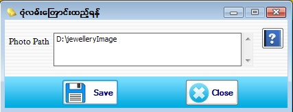

Photo Path Setup

- Master Setup အောက်ရှိ Photo Path ကို နှိပ်ပါ။
- ထို Photo Path လမ်းကြောင်း သည် Software တွင် အသုံးပြုထားသော ပုံများအားလုံး၏လမ်းကြောင်းဖြစ်ပါသည်။
- ပုံများထားရှိသော Folder ကိုအကြောင်းအမျိုးမျိုးကြောင့် ပြောင်းချင်ပါက ထို Folder ကို ကိုယ်ပြောင်းချင်သော Computer ၏ နေရာတွင် အရင် ပြောင်းပါ။ ပြီးနောက် ထို folder ၏လမ်းကြောင်းကို copy ကူးပြီး Form ၏ Photo Path text box တွင် Paste လုပ်ပါ။
- ထို့နောက် Save button နှိပ်ပြီး သိမ်းဆည်းပါ။ Photo Path တစ်ခါပြောင်းပြီးတိုင်း Log Off တစ်ခါလုပ်ပေးရန်လိုအပ်ပါသည်။ (Master Setup -> Log Off)